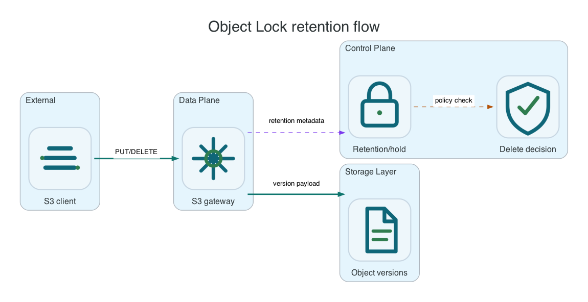

Object Lock And Retention
Object Lock must be enabled for the bucket before retention or legal hold APIs are used. Use this for immutable retention, not ordinary lifecycle cleanup.
Common AWS CLI setup
Run this once for the target bucket. Replace li9-s3-runtime and app-data with your namespace and S3Bucket resource name.
export NS=li9-s3-runtime
export BUCKET_CR=app-data
export BUCKET="$(oc -n "$NS" get s3bucket "$BUCKET_CR" -o jsonpath='{.status.bucketName}')"
export SECRET="$(oc -n "$NS" get s3bucket "$BUCKET_CR" -o jsonpath='{.status.secretName}')"
export ENDPOINT="$(oc -n "$NS" get secret "$SECRET" -o jsonpath='{.data.AWS_ENDPOINT_URL}' | base64 -d)"
export AWS_ACCESS_KEY_ID="$(oc -n "$NS" get secret "$SECRET" -o jsonpath='{.data.AWS_ACCESS_KEY_ID}' | base64 -d)"
export AWS_SECRET_ACCESS_KEY="$(oc -n "$NS" get secret "$SECRET" -o jsonpath='{.data.AWS_SECRET_ACCESS_KEY}' | base64 -d)"
export AWS_REGION="$(oc -n "$NS" get secret "$SECRET" -o jsonpath='{.data.AWS_REGION}' 2>/dev/null | base64 -d || true)"
export AWS_REGION="${AWS_REGION:-us-east-1}"
export AWS_EC2_METADATA_DISABLED=true
li9s3() {
aws --endpoint-url "$ENDPOINT" --region "$AWS_REGION" --no-verify-ssl s3api "$@"
}To verify the setup, run:
li9s3 head-bucket --bucket "$BUCKET"
li9s3 list-objects-v2 --bucket "$BUCKET" --max-keys 1Object Lock And Retention
Object Lock must be enabled when the bucket is created. Use it for immutable retention, compliance evidence, and protected versions. Do not use Object Lock as an ordinary cleanup mechanism; lifecycle policies own cleanup, while Object Lock prevents deletion or shortening of protected versions.

| Control | Behavior | Operational Rule |
|---|---|---|
| Governance retention | Blocks deletion unless the request has bypass permission and sends the bypass header. | Use for operational retention where privileged break-glass delete is allowed. |
| Compliance retention | Cannot be shortened or downgraded while active. | Use only when the retention period is approved and legally required. |
| Legal hold | Blocks deletion independently of retention date. | Use for case-based holds; remove explicitly when the hold is cleared. |
| Delete marker | No-version delete creates a delete marker on protected latest versions. | The protected version remains readable by explicit version ID. |
LOCK_BUCKET="${BUCKET}-lock"
li9s3 create-bucket --bucket "$LOCK_BUCKET" --object-lock-enabled-for-bucket
li9s3 put-object-lock-configuration \
--bucket "$LOCK_BUCKET" \
--object-lock-configuration 'ObjectLockEnabled=Enabled,Rule={DefaultRetention={Mode=GOVERNANCE,Days=1}}'
printf 'locked\n' > /tmp/locked.txt
LOCK_VERSION="$(li9s3 put-object --bucket "$LOCK_BUCKET" --key locked/item.txt --body /tmp/locked.txt --query VersionId --output text)"
li9s3 get-object-retention --bucket "$LOCK_BUCKET" --key locked/item.txt --version-id "$LOCK_VERSION"
li9s3 put-object-legal-hold --bucket "$LOCK_BUCKET" --key locked/item.txt --version-id "$LOCK_VERSION" --legal-hold Status=ON
li9s3 get-object-legal-hold --bucket "$LOCK_BUCKET" --key locked/item.txt --version-id "$LOCK_VERSION"Verify Protection
Protected delete attempts should fail or create delete markers without removing the protected version. Security audit events are emitted when Object Lock blocks deletion, including the action, resource, reason, and protected version ID.
li9s3 delete-object --bucket "$LOCK_BUCKET" --key locked/item.txt --version-id "$LOCK_VERSION" || true
li9s3 get-object --bucket "$LOCK_BUCKET" --key locked/item.txt --version-id "$LOCK_VERSION" /tmp/locked-readback.txt
cat /tmp/locked-readback.txt